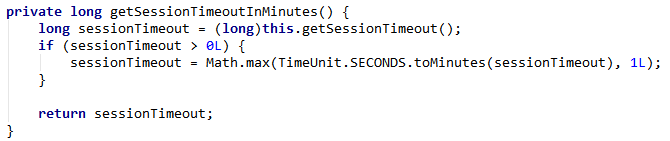
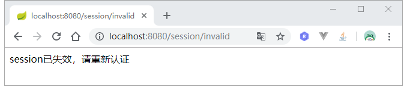
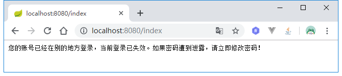
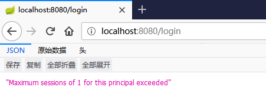
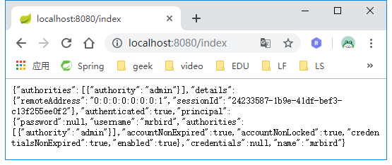
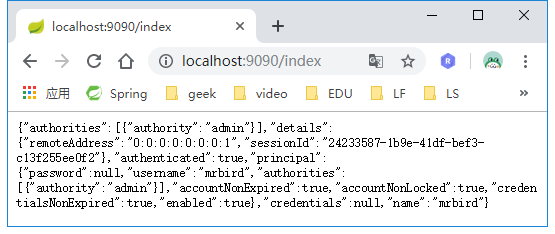

用户登录成功后，信息保存在服务器Session中，这节学习下如何管理这些Session。这节将在Spring Security短信验证码登录的基础上继续扩展。
Session超时设置
Session超时时间也就是用户登录的有效时间。要设置Session超时时间很简单，只需要在配置文件中添加：
1 | server: |
单位为秒，通过上面的配置，Session的有效期为一个小时。
值得注意的是，Session的最小有效期为60秒，也就是说即使你设置为小于60秒的值，其有效期还是为60秒。查看TomcatEmbeddedServletContainerFactory的源码即可发现原因：

Session失效后，刷新页面后将跳转到认证页面，我们可以再添加一些配置，自定义Session失效后的一些行为。
在Spring Security中配置Session管理器，并配置Session失效后要跳转的URL：
1 |
|
上面配置了Session失效后跳转到/session/invalid，并且将这个URL添加到了免认证路径中。
在Controller里添加一个方法，映射该请求：
1 | ("session/invalid") |
为了演示，我们将Session的超时时间设置为最小值60秒，重启项目，认证后等待60秒并刷新页面：

可看到请求跳转到了我们自定义的/session/invalidURL上。
Session并发控制
Session并发控制可以控制一个账号同一时刻最多能登录多少个。我们在Spring Security配置中继续添加Session相关配置:
1 |
|
maximumSessions配置了最大Session并发数量为1个，如果mrbird这个账户登录后，在另一个客户端也使用mrbird账户登录，那么第一个使用mrbird登录的账户将会失效，类似于一个先入先出队列。expiredSessionStrategy配置了Session在并发下失效后的处理策略，这里为我们自定义的策略MySessionExpiredStrategy。
MySessionExpiredStrategy实现SessionInformationExpiredStrategy：
1 |
|
为了演示这个效果，我们先将Session超时时间设置久一点，比如3600秒，然后重启项目，在Chrome里使用mrbird账户登录。
登录成功后，在firefox上也是用mrbird账户登录，登录成功后回到chrome，刷新页面，效果如下所示：

除了后者将前者踢出的策略，我们也可以控制当Session达到最大有效数的时候，不再允许相同的账户登录。
要实现这个功能只需要在上面的配置中添加：
1 | ...... |
重启系统，在chrome上登录mrbird账户后，在firefox上尝试使用mrbird账户登录：

可以看到登录受限。
在实际开发中，发现Session并发控制只对Spring Security默认的登录方式——账号密码登录有效，而像短信验证码登录，社交账号登录并不生效，解决方案可以参考我的开源项目https://github.com/wuyouzhuguli/FEBS-Security
Session集群处理
Session集群听着高大上，其实实现起来很简单。当我们登录成功后，用户认证的信息存储在Session中，而这些Session默认是存储在运行运用的服务器上的，比如Tomcat，netty等。当应用集群部署的时候，用户在A应用上登录认证了，后续通过负载均衡可能会把请求发送到B应用，而B应用服务器上并没有与该请求匹配的认证Session信息，所以用户就需要重新进行认证。要解决这个问题，我们可以把Session信息存储在第三方容器里（如Redis集群），而不是各自的服务器，这样应用集群就可以通过第三方容器来共享Session了。
我们引入Redis和Spring Session依赖：
1 | <dependency> |
然后在yml中配置Session存储方式为Redis：
1 | spring: |
为了方便，Redis配置采用默认配置即可。
开启Redis，并且启动两个应用实例，一个端口为8080，另一个端口为9090。
我们现在8080端口应用上登录：

然后访问9090端口应用的主页：

可以看到登录也是生效的。这就实现了集群化Session管理。
其他操作
SessionRegistry包含了一些使用的操作Session的方法，比如：
踢出用户（让Session失效）：
1
2String currentSessionId = request.getRequestedSessionId();
sessionRegistry.getSessionInformation(sessionId).expireNow();获取所有Session信息：
1
List<Object> principals = sessionRegistry.getAllPrincipals();
源码链接：https://github.com/wuyouzhuguli/SpringAll/tree/master/59.Spring-Security-SessionManager